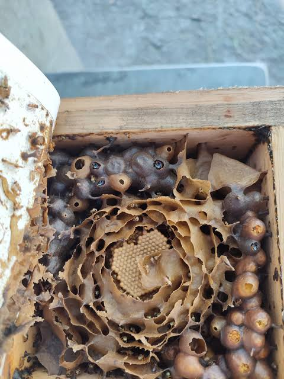

A abelha jataí (Tetragonisca angustula) é uma das abelhas nativas sem ferrão mais conhecidas e populares do Brasil. Ela se destaca por sua docilidade, alta capacidade de adaptação tanto no campo quanto em áreas urbanas e pela produção de um mel nobre com propriedades medicinais.